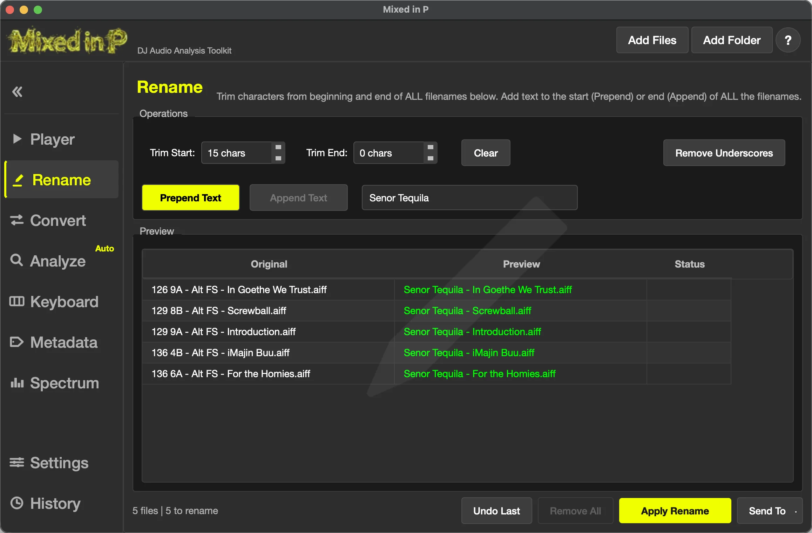
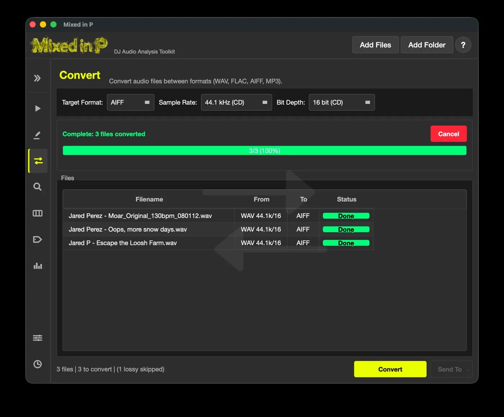
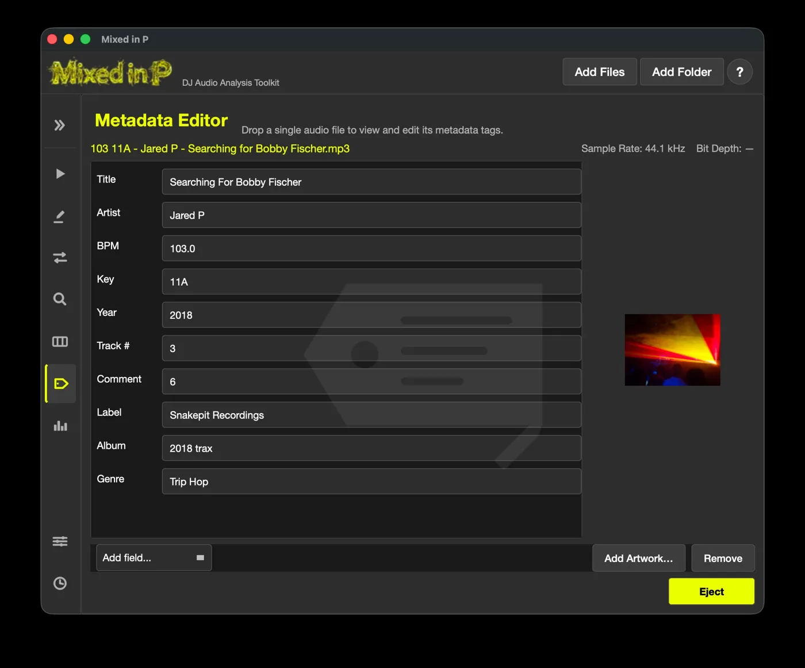
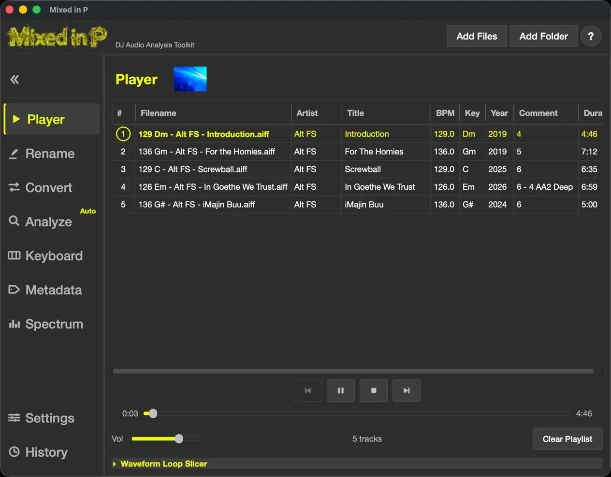
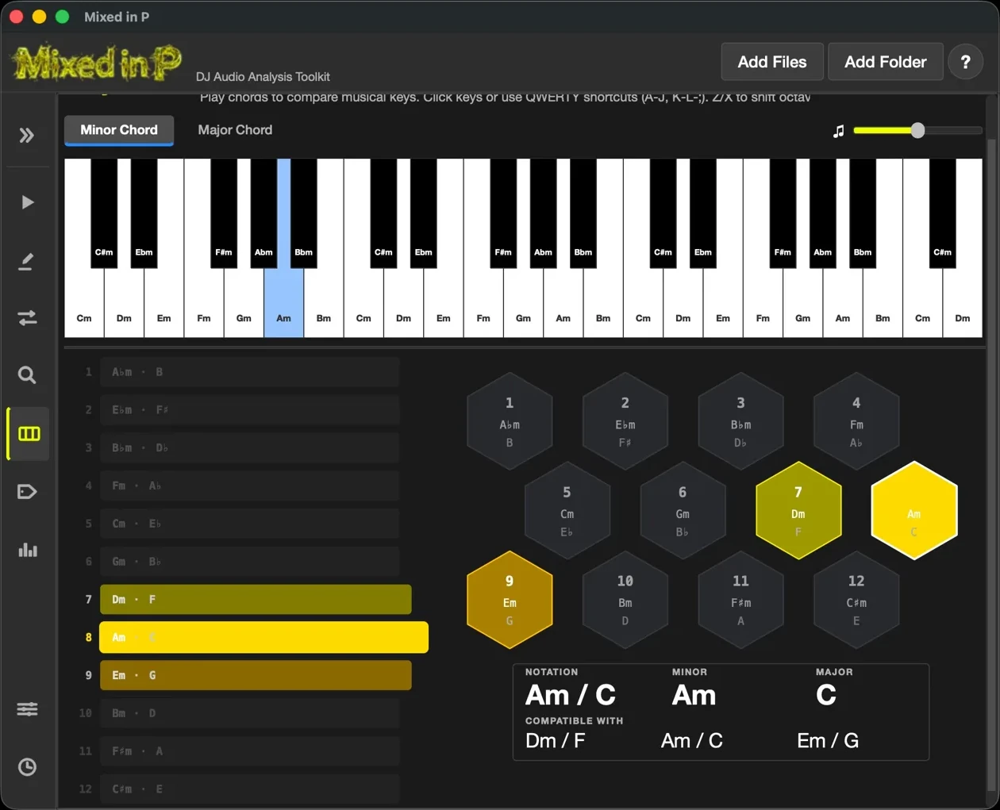
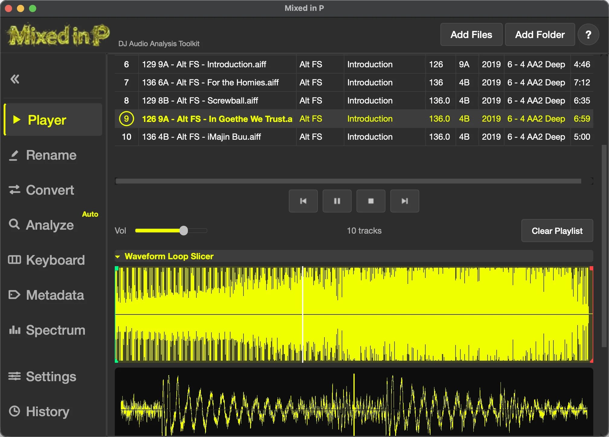
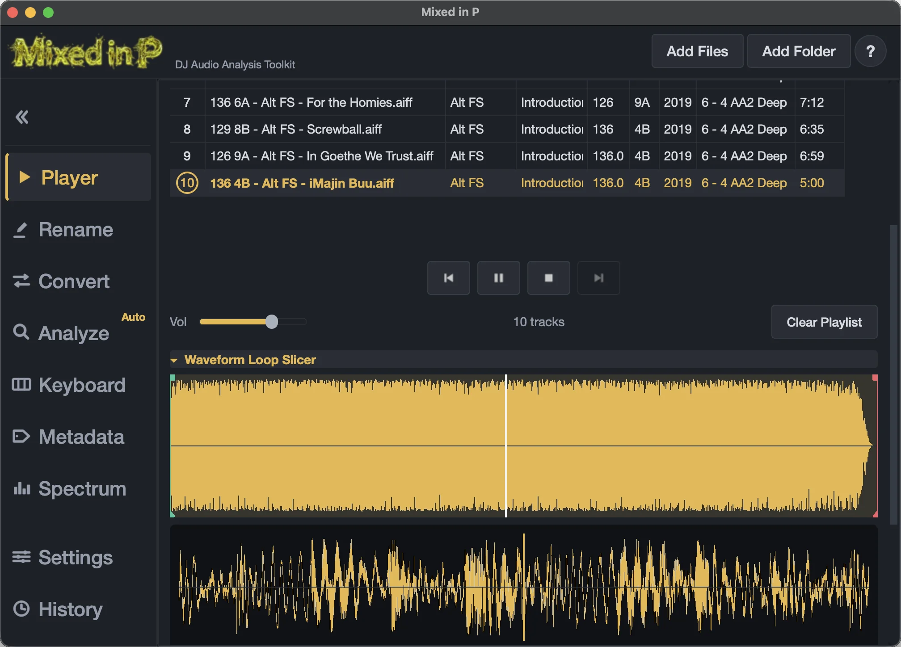
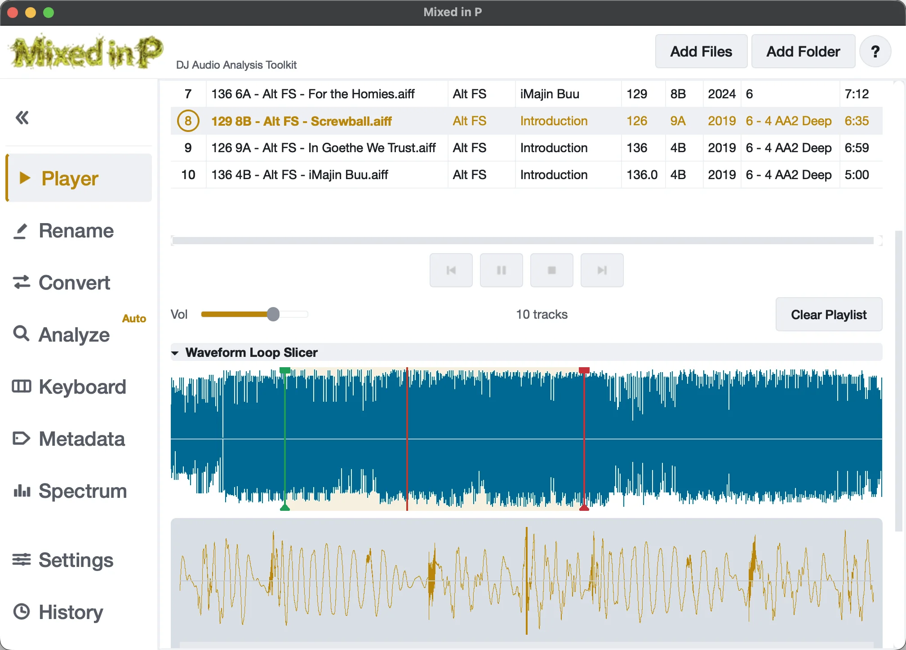
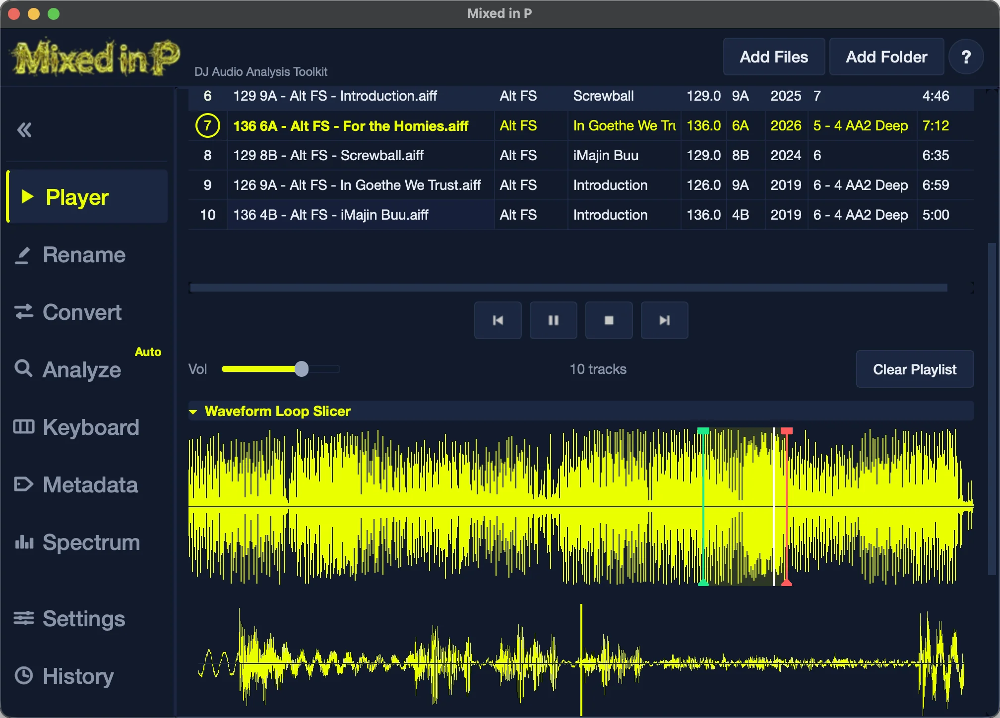

The full audio file prep workflow for DJs · v1.3.3
Mixed in P helps you organize, rename, convert, and tag your library, then analyzes every track for BPM, musical key, and energy — all in one compact desktop app built for DJs.
01What is Mixed in P
Mixed in P is a desktop app for DJs and producers that turns a folder of tracks into a well-understood, well-organized library. Drop your files in and it detects:
- BPM (tempo) with a confidence score,
- Musical key, shown as a harmonic key code (e.g.
8A), - Energy level (1–10), a quick feel for a track's intensity.
- Audio quality — the Spectrum view's frequency graph reveals the high-frequency cutoff of a low-bitrate or upscaled file, so you can catch fakes before they reach your set.
From there you can batch-rename files with the tempo and key baked into the name, convert between lossless formats, edit tags and artwork, and audition or slice tracks in the built-in player. It runs on Windows and macOS (Apple Silicon and Intel).

02Install & first run
| Platform | Download | Notes |
|---|---|---|
| Windows | .exe installer | Run the installer and launch from the Start menu. |
| macOS (Apple Silicon) | .dmg (arm64) | Open the disk image, then drag the app to Applications. |
| macOS (Intel) | .dmg (x86_64) | Open the disk image, then drag the app to Applications. |
On macOS, open the DMG and drag the app to Applications. The first time you launch it, macOS
shows a “Mixed in P is an app downloaded from the Internet — are you sure you want to open
it?” prompt; click Open. Because the builds are signed and notarized by Apple, this
is the quick one-time confirmation, and it won't appear again.
The Windows build isn't
code-signed yet, so a blue Defender SmartScreen may warn on first launch; click
More info → Run anyway → Yes to proceed.
First run, in three steps:
- Click Add Files or Add Folder in the header (or just drag files in).
- Open the Analysis panel — your tracks analyze automatically.
- Read the BPM and key code for each track, and take it from there.
03The interface at a glance
The window has three parts: a header (Add Files / Add Folder + About), a sidebar that switches panels and doubles as a drag-and-drop routing target, and the panel area with the active tool.
| Panel | What it's for |
|---|---|
| Analysis | Detect BPM, key, and energy. |
| Convert | Convert between WAV, FLAC, AIFF, and MP3. |
| Rename | Batch-rename with live preview. |
| Player | Play, audition, and slice tracks (Waveform Loop Slicer). |
| Metadata | Edit tags and cover artwork. |
| Keyboard | 3-octave piano + harmonic reference grid. |
| Spectrum | Spek-style frequency view of a track. |
| History | Undo past rename batches. |
| Settings | Tempo range, notation, auto-rename, language, theme, and more. |
04Core workflows
Analyze tracks
Drop files onto the Analysis panel and they analyze automatically. Each row shows BPM, key, key code, energy, and confidence percentages, plus a color-coded status.
- The Auto toggle controls whether dropped files analyze instantly; with it off, files wait as pending until you press Analyze.
- Detected BPM and key can be written back to the file's tags (see Settings).
- Right-click a row to Open File Location or Remove; Clear Results empties the table.
- Use Send To to push selected tracks to Convert or the Player.

Organize & batch-rename
The Rename panel rewrites many filenames at once, with a live before/after preview.
- Trim characters from the start and/or end of every name.
- Prepend or Append custom text (one or the other). Add text to the beginning or end of ALL the filenames being renamed.
- Remove underscores replaces
_with spaces. - Changes show in green; conflicts (duplicate results) block Apply Rename until resolved.
- Undo Last reverts the most recent batch; older batches undo from History.

Convert formats
- Pick a target format: AIFF, WAV, FLAC, or MP3.
- Lossless targets offer sample rate (96 / 48 / 44.1 / 32 kHz) and bit depth
(32 / 24 / 16 / 8-bit);
MP3 offers a bitrate (128 / 192 / 256 / 320 kbps). - Sources must be lossless (WAV, FLAC, AIFF) — lossy files are rejected as sources.
- Send To moves output to Analyze, Rename, or the Player.

Edit metadata & artwork
Drop a single file onto the Metadata panel to edit Title, Artist, Album, Label, Genre, BPM, Key, Year, Track #, and Comment. Changes save automatically when you leave a field. Add fields with Add field…, embed a cover image by dropping it or clicking Add Artwork…, and unload with Eject. Reload re-reads the file from disk to pick up tag changes made elsewhere — for example, edits you made inline in the Player playlist.

Play, audition & lift samples
- Player transport: Previous / Play-Pause / Stop / Next, a click-or-drag seek bar, and volume.
- The playlist shows filename, artist, title, BPM, key, comment, duration, and year. Double-click to play, drag to reorder, and right-click to open the file location, reload a track's tags from disk, or remove tracks; column layout is remembered.
- Edit tags inline: slow-double-click a cell — click an already-selected row again, the way you rename in Finder/Explorer — to edit Artist, Title, BPM, Key, Comment, or Year directly in the playlist; changes save straight to the file. The Edit Lock toggle at the top-right turns inline editing on/off — it starts unlocked and remembers your choice, so you can lock the list against accidental edits.
- A panel shows the tags it loaded until you refresh it. Right-click → Reload Metadata from File in the Player (or Reload in the Metadata panel) re-reads the file from disk — handy after editing the same track in the other panel.
- The next track pre-loads in the background, so Next is instant.
- Waveform Loop Slicer: set start/end markers, nudge them, toggle an A–B loop, pick a format, and export the slice — ideal for lifting loops and samples by ear.
- The waveform's color is configurable in Settings.


Keyboard & harmonic reference
A 3-octave piano you can play with the mouse or QWERTY keys (Z / X shift the octave), with Minor/Major chord modes. A linear key strip and hex grid light up to show a key's harmonic neighbors — click any segment to hear that key. Key notation displayed in the top-right corner changes with your choice in Settings.

Spectrum view
Drop a file onto the Spectrum panel for a Spek-style spectrogram — time across, frequency up, loudness as color — with a dynamic-range slider. Handy for spotting low-quality transcodes.

05Moving files between panels
- Send To menus — Rename → Analyze / Convert; Convert → Analyze / Rename / Player; Analysis → Convert / Player.
- Sidebar drag — select rows and drop them on another panel's sidebar button. Routes either move (remove from source) or copy the files; the button highlights when it's a valid target.
- From your file manager — dragging files in always adds them.
06Settings reference
- Language — many languages supported; restart to apply.
- Theme — choose a color scheme; restart to apply:
- Neon Dark (default) — the original dark look with neon-yellow accents.
- Night Dark — a softer dark scheme with muted, low-glare accents, easier on the eyes during long late-night sessions.
- Daylight — a light scheme with dark text on pale surfaces, for bright rooms.
- Nuevo Leon — a blue-black navy scheme with a sharp neon-yellow accent and mint-green highlights; mirrors the website's look.
- Tempo range — lowest/highest BPM (defaults 99–199); narrow it to avoid half/double errors.
- After analysis — toggle auto-analyze, write BPM to tags, write key to tags, auto-rename, and write key to comment (with energy-first option).
- Naming format — choose the prefix/suffix layout, e.g.
128 8A - Original_Nameor8A - Original_Name. Affects auto-rename only. - Notation — Key Codes (default), Traditional, or Traktor Open Key. Applied live.
- Waveform color — the color of the full-length waveform in the Player. Pick a preset or choose a custom color; applied live. The first option, Default, follows the active theme (each theme has its own waveform color).
The four color themes (set in Settings → Theme, applied after a restart):




All settings save instantly — there's no Save button.
07Keyboard shortcuts
| Keys | Action | Where |
|---|---|---|
| Space | Play / Pause | Player (when focused) |
| Delete / Backspace | Remove selected rows | Player, Rename, Analysis |
| Z / X | Shift octave down / up | Keyboard |
| A–L, ; | Play notes | Keyboard |
| W E T Y U O P | Play black-key notes | Keyboard |
| S / Q / E | Slice section controls | Player (slicer expanded) |
08Supported formats
| Task | Formats |
|---|---|
| Analyze | MP3, WAV, FLAC, AIFF/AIF, M4A, OGG |
| Play / audition | MP3, WAV, FLAC, AIFF/AIF, M4A, OGG |
| Edit metadata | MP3, WAV, FLAC, AIFF/AIF, M4A, OGG |
| Convert — from | WAV, FLAC, AIFF (lossless only) |
| Convert — to | WAV, FLAC, AIFF, MP3 |
Converting from a lossy source into a lossless format is intentionally blocked — it can't restore lost quality.
09Harmonic key-code reference
| Code | Open Key | Minor key | Code | Open Key | Major key |
|---|---|---|---|---|---|
| 1A | 6m | G#m / A♭m | 1B | 6d | B |
| 2A | 7m | D#m / E♭m | 2B | 7d | F# / G♭ |
| 3A | 8m | A#m / B♭m | 3B | 8d | C# / D♭ |
| 4A | 9m | Fm | 4B | 9d | G# / A♭ |
| 5A | 10m | Cm | 5B | 10d | D# / E♭ |
| 6A | 11m | Gm | 6B | 11d | A# / B♭ |
| 7A | 12m | Dm | 7B | 12d | F |
| 8A | 1m | Am | 8B | 1d | C |
| 9A | 2m | Em | 9B | 2d | G |
| 10A | 3m | Bm | 10B | 3d | D |
| 11A | 4m | F#m / G♭m | 11B | 4d | A |
| 12A | 5m | C#m / D♭m | 12B | 5d | E |
The Code columns are the app's default key codes; the Open Key columns show the same keys in Traktor Open Key notation.
Compatible for mixing: the same number (relative major/minor), or ±1 on the same letter.
10Harmonic mixing in 60 seconds
Two tracks sound good together when their keys are compatible. Remembering raw key names (F# minor, D♭ major…) is awkward, so Mixed in P uses key codes — a clock-face system where every key gets a number (1–12) and a letter (A for minor, B for major).
8A, good next picks are
8B, 7A, or 9A.Prefer traditional note names or Traktor's Open Key format? Switch any time in Settings → Notation. The full mapping is in the key-code reference below.
11FAQ & troubleshooting
A file says "Lossy not allowed" in Convert. The source is MP3, M4A, or OGG. Lossless conversion needs a lossless source (WAV/FLAC/AIFF). Converting to MP3 is fine.
The BPM looks half or double what I expect. Set a tighter tempo range in Settings (e.g. 90–180) so detection stays in DJ-typical territory.
The detected key seems off. Key detection reports a confidence score — low confidence means it's a harder call. Correct the key in the Metadata panel.
I renamed files by mistake. Use Undo Last in the Rename panel, or open History to undo any recent batch.
My language change didn't take effect. Language applies on the next launch — restart the app.
My theme change didn't take effect. Like language, the color theme applies on the next launch — restart the app.